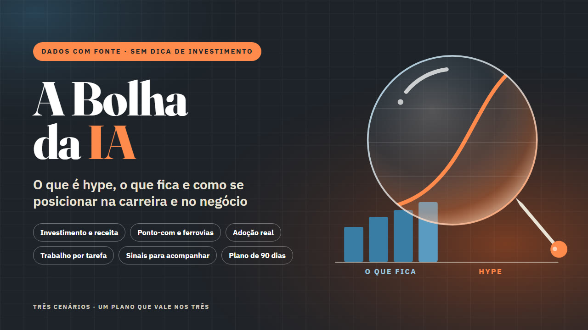

A Bolha da IA
O que é hype, o que fica e como se posicionar
Bolha ou revolução? Análise com dados e fontes datadas sobre investimento, receita e adoção da IA, e um plano de 90 dias para a carreira e o negócio. Sem dica de investimento.
Quero o meu por R$ 27Ebook em PDF de 36 páginas com 9 gráficos · acesso na hora · garantia de 7 dias

Bolha ou revolução?
- Uma semana você lê que a inteligência artificial vai acabar com metade dos empregos. Na outra, que tudo não passa de uma bolha prestes a estourar. Os dois lados falam com muita certeza e pouca conta. E você fica sem saber se deve correr atrás de um curso, mudar de área, cortar a ferramenta que acabou de assinar ou simplesmente esperar.
O A Bolha da IA faz a conta por você, com números de fontes oficiais e datadas, e transforma a análise em decisões para a sua carreira e o seu negócio.
O que tem dentro
- O dinheiro: quanto Microsoft, Alphabet, Amazon e Meta investem em data centers (cerca de US$ 380 bilhões em 2025 e US$ 730 bilhões previstos para 2026, segundo relatórios das próprias empresas) e por que a dívida entrou em cena.
- A conta que precisa fechar: quanto a IA já fatura, o tamanho do "buraco" estimado por analistas e o custo de uso que caiu mais de 280 vezes em dois anos (Stanford AI Index 2025).
- Já vimos esse filme? A mania das ferrovias britânicas de 1840 e a bolha das ponto-com: o que aconteceu com o dinheiro e o que ficou de útil.
- Adoção real: quantas empresas usam IA e quantas ganham com isso, com dados da McKinsey, do Stanford AI Index, do IBGE, do Cetic.br e do Sebrae.
- O que muda no trabalho: exposição por tipo de tarefa (OIT e FGV), o que dizem os estudos de produtividade e por que os iniciantes sentem primeiro.
- O placar de hype e do que fica: as afirmações mais comuns sobre IA, uma por uma, com a evidência.
- Painel de 10 sinais para acompanhar uma vez por mês, com onde olhar e o que significa cada cor.
- Como se posicionar: três cenários (a bolha estoura, desacelera ou continua), o que fazer na carreira e no negócio em cada um, plano de 90 dias e checklists.
- 9 gráficos feitos a partir dos dados citados, resumo em cada capítulo, glossário e lista de fontes.
É para você se…
- Profissionais de escritório, atendimento e serviços que querem decidir com calma o que aprender e o que fortalecer.
- Pequenos empresários e autônomos que querem usar IA sem gastar com ferramenta que não se paga.
- Quem está cansado de manchete alarmista, nos dois sentidos.
Não é para você se…
- Quem procura dica de ações, cripto ou "onde investir na IA". O livro não trata disso.
- Quem procura renda extra ou fórmula de ganhar dinheiro com IA.
- Quem quer previsão certa sobre o futuro: o livro trabalha com cenários, não com profecias.
O que este produto NÃO é: Não é recomendação de investimento: não indica compra ou venda de ações, fundos, criptomoedas ou qualquer ativo, nem onde aplicar dinheiro. Não faz previsões apresentadas como certeza e não promete renda, emprego ou resultado. Todo número tem fonte e data, e o que é opinião vem marcado como opinião. Os dados foram conferidos até 19/10/2026. Empresas citadas são exemplos de análise, sem vínculo com o material.
Tudo por um pagamento único
Ebook em PDF de 36 páginas com 9 gráficos · sem mensalidade
Pix ou cartão · acesso imediato pela área de membros da Kiwify (o link chega no seu e-mail)
100% de volta
Leia por 7 dias. Se não servir, o dinheiro volta inteiro.
Peça o reembolso pela Kiwify ou pelo e-mail lucaszone36@gmail.com, sem precisar explicar. Esse prazo é um direito seu pelo Código de Defesa do Consumidor.
Quero testar sem riscoPerguntas frequentes
Como recebo?
Acesso imediato pela área de membros da Kiwify. O link de acesso chega no e-mail informado na compra.
Consigo ler no celular?
Sim. O PDF abre no celular, no tablet e no computador.
O livro diz onde investir?
Não. Não é recomendação de investimento: não indica compra ou venda de ações, fundos, criptomoedas ou qualquer ativo, nem traz cotação.
De onde vêm os números?
De fontes oficiais e datadas (relatórios das empresas, Stanford AI Index, McKinsey, OIT, FGV, IBGE, Cetic.br, Sebrae), conferidas até 19/10/2026. O que é opinião vem marcado como opinião.
E se eu me arrepender?
Você tem 7 dias para pedir 100% do valor de volta, sem justificar, pela Kiwify ou pelo e-mail lucaszone36@gmail.com.